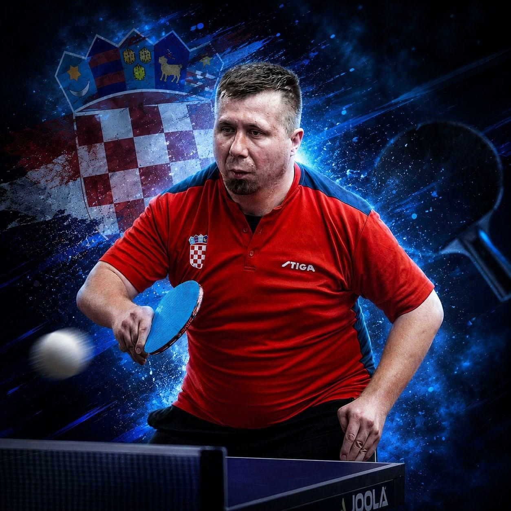

Fokus, radna etika i borba za svaki poen. Profesionalni parastolnotenisač, državni prvak i igrač u talijanskoj ligi.
Zovem se Marko Vračan i parastolni tenis nije samo moj sport, to je moj način života. Natječem se u Klasi 8, kategoriji koja okuplja stojeće igrače sa specifičnim oštećenjima, no za mene granice postoje samo kako bih ih svakodnevno rušio.
Svaki udarac za stolom zahtijeva nevjerojatnu fokusiranost i tehničku preciznost. U ovaj sport uložio sam tisuće sati u dvorani, žrtvujući slobodno vrijeme radi usavršavanja svakog pokreta. Treniram minimalno jednom, a vrlo često i po dva puta dnevno, jer talent otvara vrata, ali samo nepopustljiva disciplina donosi medalje na postolju.
Od mojih početaka i brušenja forme u matičnim klubovima PSK Synergia i velikogoričkom Usponu, pa sve do onog neopisivog ponosa kada sam prvi put obukao dres hrvatske reprezentacije, svaki meč bio je lekcija. Kruna mog dosadašnjeg domaćeg rada svakako je osvajanje naslova Državnog prvaka 2023. godine.
Nisam netko tko se zadovoljava postignutim. Moj nedavni prelazak u talijanski klub Santa Tecla Nulvi sa Sardinije jasan je dokaz moje ambicije. Želim se natjecati s najboljima u Europi, skupljati međunarodno iskustvo i dokazati da se trud itekako isplati.

Potpis za prestižni talijanski klub sa Sardinije. Odlazak na Apeninski poluotok i redoviti nastupi u tamošnjoj drugoj parastolnoteniskoj ligi označavaju veliki iskorak u klupskoj karijeri.
Kao stalni član nacionalne vrste u Klasi 8, branim boje Hrvatske na brojnim međunarodnim turnirima, uz brončano odličje u igri parova osvojeno u Podgorici.
Moji domaći klubovi u kojima gradim formu. Vrhunac domaćih natjecanja je uvjerljivo osvajanje prvog mjesta i titule državnog prvaka u pojedinačnoj konkurenciji u Slavonskom Brodu (2023.), uz nedavno srebro u Prelogu (2026.).
Na Prvenstvu Hrvatske u Prelogu osigurao sam drugo mjesto i srebrnu medalju za klub "Uspon".
Na nedavnom jakom međunarodnom turniru u Podgorici (svibanj 2026.) uspješan prolazak grupne faze.
Na ITTF World Para Challengeru u Lignanu, u paru s Bornom Zohilom, osvojena brončana medalja.